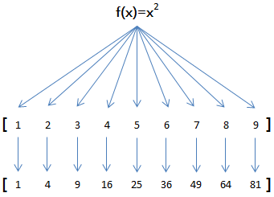

序列操作
1、all() 接受一个迭代器，如果迭代器的所有元素都为真，那么返回True，否则返回False
>>> li = [1,2,3]
>>> all(li)
True
>>> li = [1,2,3,0]
>>> all(li)
False
2、any() 接受一个迭代器，如果迭代器里有一个元素为真，那么返回True,否则返回False
>>> li = [1,2,3,0]
>>> any(li)
True
>>>
3、sorted 排序sorted([1,555,4,6,8]，reverse=False) 也就是小到大排序。reverse=True大到小排序
>>> sorted([1,2,3,5,6,9])
[1, 2, 3, 5, 6, 9]
>>> sorted([1,2,3,5,6,9],reverse=False)
[1, 2, 3, 5, 6, 9]
>>> sorted([1,2,3,5,6,9],reverse=True)
[9, 6, 5, 3, 2, 1]
>>> sorted(['a','b','C','D','d'],key=str.lower) # 字符串无关大小写排序
['a', 'b', 'C', 'D', 'd']
4、reversed([1,5,3]) 返回一个倒序的序列
>>> a = [1,2,3,4,5]
>>> a.reverse()
>>> a
[5, 4, 3, 2, 1]
5、zip(*iterables) 用于聚合来自每个迭代器的元素。
>>> zip([1,2,3],['a','b','c'])
<zip object at 0x7f5c2f9d7fc8>
>>>
>>> a = zip([1,2,3],['a','b','c'])
>>> list(a)
[(1, 'a'), (2, 'b'), (3, 'c')]
如果可迭代对象的元素个数不一样，那么按照最少的那个迭代压缩。最少元素那饿可迭代对象结束后退出。
>>> a = zip([1,2,3],['a','b','c','d','e'])
>>> list(a)
[(1, 'a'), (2, 'b'), (3, 'c')]
6、enumerate(iterable,start = 0) 返回一个枚举对象。iterable必须是一个序列，一个 迭代器或者其他支持迭代的对象 enumerate()返回一个包含count的元组（从start开始，默认值为0）以及iterable迭代获得的值。
>>> seasons = ['spring','summer','fall','winter']
>>> list(enumerate(swasons))
[(0, 'spring'), (1, 'summer'), (2, 'fall'), (3, 'winter')]
>>> list(enumerate(swasons,start=5))
[(5, 'spring'), (6, 'summer'), (7, 'fall'), (8, 'winter')]
7.map方法
map(function,iterable)函数接收两个参数，一个是函数，一个是可迭代对象，map将传入的函数依次作用到序列的每个元素，并把结果作为新的list返回。
比如我们有一个函数f(x)=x2，要把这个函数作用在一个list [1, 2, 3, 4, 5, 6, 7, 8, 9]上，就可以用map()实现如下： 
我们用python代码实现：
def func(x):
return x**2
list(map(func,range(1,10))) #python3会返回map对象，python2会直接返回列表
下面 我们处理一个任务：
将[1,2,3,4,5,6,7,8] 处理成['1', '2', '3', '4', '5', '6', '7', '8']
list(map(str,[1,2,3,4,5,6,7,8]))
当可迭代对象多一个时，可以并行地对每个可迭代对象执行map
list1 = map(lambda x,y:x**y,[1,2,3],[4,4,4])
list(list1)
list2 = map(lambda x,y:(x**y,x+y),[1,2,3],[1,2,3])
list(list2)
8.reduce方法
reduce(function, sequence[, initial])
reduce把一个函数作用在一个序列上，从第一个元素开始把结果继续和序列的下一个元素做累积计算]
在 Python3 中，reduce() 函数已经被从全局名字空间里移除了，它现在被放置在 fucntools 模块里，如果想要使用它，则需要通过引入 functools 模块来调用 reduce() 函数：
from functools import reduce
reduce(lambda x,y:x+y,[1,2,3,4,5,6])
#把序列[1, 3, 5, 7, 9]变换成整数13579
reduce(lambda x,y:x*10 + y,[1,3,5,7,9])
reduce函数可以设置initial，会先被计算
from functools import reduce
reduce(lambda x,y:x+y,['x','y','z'],a)
scientists =({'name':'Alan Turing', 'age':105, 'gender':'male'},
{'name':'Dennis Ritchie', 'age':76, 'gender':'male'},
{'name':'Ada Lovelace', 'age':202, 'gender':'female'},
{'name':'Frances E. Allen', 'age':84, 'gender':'female'})
def reducer(accumulator , value):
sum = accumulator + value['age']
return sum
total_age = reduce(reducer, scientists, 0)#在第一次计算时，accumulator为0
print(total_age)
9.filter方法
Python内建的filter()函数用于过滤序列。
filter(function or None, iterable) --> filter object
和map()类似，filter()也接收一个函数和一个可迭代对象。和map()不同的是，filter()把传入的函数依次作用于每个元素，然后根据返回值是True还是False决定保留还是丢弃该元素。True保留，False丢弃 。
a=filter(lambda x:x%2,[1,2,3,4,5,6,7,8]) #奇数
list(a)
res = filter(lambda s:s and s.strip(),['A','',None,'B',' ','C'])#去除空字符串